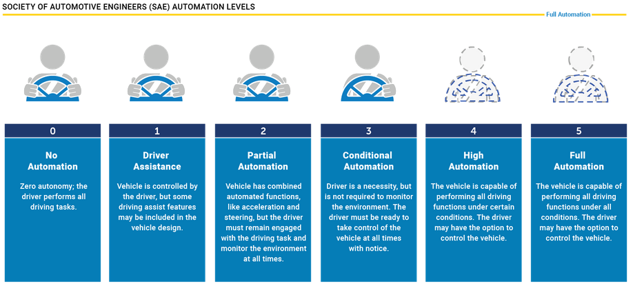
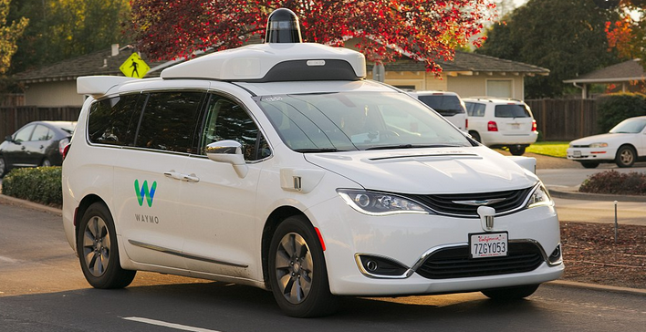
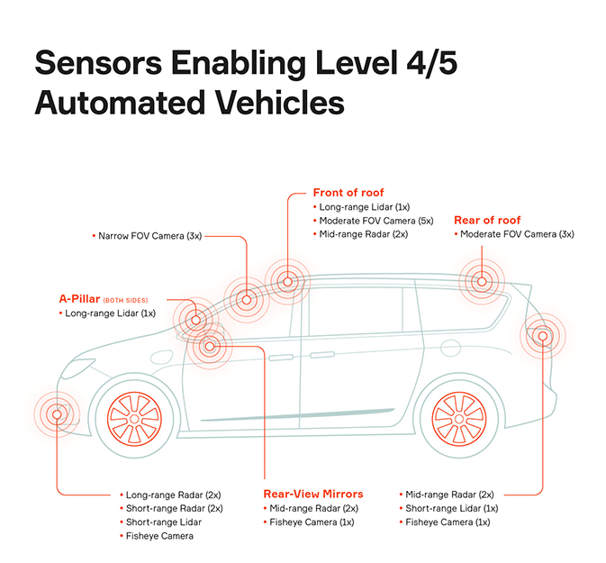
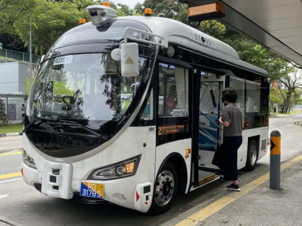

Autonomous vehicles- regardless of type- car, truck, train etc- are vehicles able to reduce reliance on a human driver for their operation, either in part or in full. The reduction in human operation relates to the degree or scale of autonomy achieved in the vehicle itself and depending on the vehicle type, there are different scales that apply. The Society of Automotive Engineers has developed an industry wide scale (SAE J3016) that applies for on-road vehicles such as cars (Aptiv, 2020). While only level 4 and 5 vehicles are considered to be actual driverless vehicles, the scale ranges from level 0 (no automation) to level 5 (full automation) with a breakdown provided below;
(Source: NHTSA)
Level 0 (no automation) – driver is fully responsible for the operation of the vehicle. Features such as electronic stability control, ABS braking and warning systems like parking sensors etc are not counted towards driving automation as they are only momentary aids that do not eliminate the role of the driver in the driving task.
Level 1 (basic driver assistance) – some automation of function but generally limited and only in specific circumstances, eg: automation of acceleration for adaptive cruise control
Level 2 (partial automation) – vehicles can partially automate functions such as acceleration, braking and steering in certain circumstances via advanced driver assistance systems however the driver must always be prepared to take control of the vehicle.
Level 3 (conditional automation) – the driver can disengage from the act of driving and the vehicle is capable of automated driving however generally only in certain circumstances and conditions (eg: high congestion, low speed driving). The driver still needs to be able to resume control of the vehicle when required and the vehicle must be able to monitor the state of the driver to ensure that they are capable of taking control- the vehicle must be able to come to a safe stop if the driver does not resume control.
Level 4 (high automation) – the vehicle is fully capable of performing all driving tasks within the scope of its operational driving domain (ODD). The system must be able to monitor for conditions or hazards outside of its ODD and, depending on the vehicle operation, the driver may need to resume operation if advised by the system and the system must be able to bring the vehicle to a safe stop if the driver does not respond. The ODD is defined as “Operating conditions under which a given driving automation system or feature thereof is specifically designed to function, including, but not limited to, environmental, geographical, and time-of-day restrictions, and/or the requisite presence or absence of certain traffic or roadway characteristics” (Lance Eliot, 2019).
Level 5 (full automation) – no driver is required for any functions and the vehicle is capable of fully automated function in any location and under any circumstance (that a human driver could operate in). Depending on design, vehicles may not have a steering wheel or pedals etc. Passengers would have control of and be able to input destination data, adjust internal temperature / climate control functions and play music etc (Aptiv, 2020).
Currently, Level 2 and level 3 vehicles are available for purchase. There are many trials of level 4 vehicles occurring and publicly accessible “robo-taxi” services are currently in limited operation (Timothy Lee, 2020) and trial operation (Takashi Kawakami, 2021) in different locations and by different companies. Level 5 vehicles are not yet available for purchase by the public.
(Source: Wikipedia)
While level 4 vehicle usage is likely to become more widespread it is unlikely that level 5 vehicles will be possible in the near-term future; the difficulty moving from level 4 to level 5 has been described as “orders of magnitude harder than transitions between other levels” (Hussein Dia, 2021, para 13) and aside from the technological improvements needed (such as cheaper sensors and better artificial intelligence), regulatory hurdles and public acceptance of automated vehicle technology still remain problems to be overcome (John McDermid, 2020).
Autonomous vehicles require onboard computers, specially designed self-driving software, control systems and sensors (such as lidar, radar, cameras, odometers, GPS etc). Each higher level of automation generally requires additional sensors and better software as more functions become automated. Processes such as machine learning can be useful to improve automated driving performance over time and technologies such as artificial intelligence and neural networks can and will be used to further improve the learning process (Hussein Dia, 2021).
(Source: APTIV)
Autonomous vehicles are predicted to have impacts across a number of industries and facets of society, so a brief look at one positive and one negative aspect will be explored below;
According to Road Safety Education Victoria, “human factors” are involved in up to 95% of road crashes (as either the sole factor or in combination with other factors) (Road Safety Education Victoria, 2021). In this context, “human factors” are described as “the behaviour of the people involved – such as: deliberate risk taking; distraction (mobile phones, music, friends); tiredness (resulting in poor concentration); driving while affected by alcohol or drugs; lateness (resulting in speeding); disregard for road rules; choosing the unsafe option (such as a pedestrian crossing between moving vehicles)” (Road Safety Education Victoria, 2021). So, factoring in fewer human drivers, the most positive likely impact of increased usage of autonomous vehicles is predicted to be a reduction in accidents and the subsequent injuries and deaths associated with them.
A report by the Australian Automobile Association found that in 2015, the following costs were attributed to road trauma (Australian Automobile Association, 2017);
From a non-economics perspective, some more recent data from the Department of Infrastructure, Transport, Regional Development and Communication (Bureau of Infrastructure and Transport Research Economics, 2021) indicates;
Fewer road accidents would likely then have many economic benefits associated with increased societal productivity and reduced costs associated to healthcare and provisioning disability care, and lost taxation revenue etc and- from a more human perspective- reduce the number of deaths, injuries and permanent disabilities suffered each year.
On the other side, another direct impact would be on employment in driving and transport related industries. With “robo-taxi” services already in (limited) operation, taxi drivers are clearly likely to be impacted as their industry becomes progressively more automated, the same going for train and truck drivers. And while it is difficult to determine the full impact these changes will have or the timeframe for which these impacts will occur, there is likely to be (overall) negative impacts on employment in affected industries. In Australia in 2015, more than 247,000 people were employed driving buses, taxis, trains and trucks. (Australian Parliament House, 2017)
In a report by the Australian Parliament, research from the ARC Robotic Futures Research Team was noted; “In the domain of land-based transportation, the advent of driverless vehicles is likely to change the labour skills required... Rather than entirely unmanned vehicles, research on automation indicates that the role of the driver is likely to change from vehicle control, to monitoring… Many predict that the consequences for the current transportation labour force are likely to be negative... Predictions are for fewer workers, with one operative potentially overseeing multiple vehicles.” (Australian Parliament House, 2017)
There are a few ways that I (as an individual who doesn’t drive) can stand to benefit from automated vehicles. Firstly, as dedicated user of public transport I, personally, would likely have better access to buses and trains, with each transport method predicted to be more punctual as well as potentially running more services, especially outside of peak times.
Due to reductions in operating costs, bus services could potentially be delivered more frequently and with greater flexibility in more areas (Neema Nassir, 2019).
(Source: The Straits Times)
According to Siemens Mass Transit general manager Frank Gerken, for systems with automatic train operation "Train operations become more exact and timely as the automation system controls the trains according to a schedule split in seconds... The frequency of the trains can be enhanced, especially in low traffic hours, as more and shorter trains can be inserted in traffic..." (Railway Technology, 2011, para 14).
Depending on the economics and uptake, robo-taxi services will likely be cheaper (Graham Rapier, 2019) and more readily available than current taxi services, offering an additional (and more price-comparable) choice of travel.
If, as some anticipate (Veronica Combs, 2019), automated vehicles reduce the rate of car ownership, then there may be fewer cars on the road. This would make cities more pedestrian friendly and potentially help to reduce the number of accidents involving pedestrians and road vehicles.
In general day to day life, I would expect to spend less time waiting for public transport services, have cheaper access to taxis and experience greater user satisfaction with both of those services- these benefits would be shared by many of my friends and family, however they will be predominantly benefit those who live in urban and suburban environments or areas with a greater range of public transport access (as rural areas typically have poor access to public transport and, thus, low rates of public transport usage and higher rates of vehicle ownership).
Mobility Insider, 2020, What are the levels of automated driving?, Aptiv, viewed 05/09/2021 https://www.aptiv.com/en/insights/article/what-are-the-levels-of-automated-driving
Lance Eliot, 2019 Explaining level 4 and 5 of self-driving cars in plain english, Forbes, viewed 05/09/2021, https://www.forbes.com/sites/lanceeliot/2019/12/20/explaining-level-4-and-level-5-of-self-driving-cars-in-plain-english/
Mobility Insider, 2020 What are the levels of automated driving?, Aptiv, viewed 05/09/2021, https://www.aptiv.com/en/insights/article/what-are-the-levels-of-automated-driving
Timothy Lee, 2020, Waymo finally launches an actual public, driverless taxi service, ARS Technica, viewed 05/09/2021, https://arstechnica.com/cars/2020/10/waymo-finally-launches-an-actual-public-driverless-taxi-service/
Takashi Kawakami, 2021, Reporter's notebook: a ride in a driverless AutoX robotaxi, Nikkei Asia, viewed 05/09/2021, https://asia.nikkei.com/Business/Automobiles/Reporter-s-notebook-a-ride-in-a-driverless-AutoX-robotaxi
Hussein Dia, 2021, ‘Self-driving’ cars are still a long way off. Here are three reasons why, The Conversation, viewed 05/09/2021 https://theconversation.com/self-driving-cars-are-still-a-long-way-off-here-are-three-reasons-why-159234
John McDermid, 2020, Autonomous cars: five reasons they still aren’t on our roads, The Conversation, viewed 05/09/2021, https://theconversation.com/autonomous-cars-five-reasons-they-still-arent-on-our-roads-143316
Hussein Dia, 2021, ‘Self-driving’ cars are still a long way off. Here are three reasons why, The Conversation, viewed 05/09/2021, https://theconversation.com/self-driving-cars-are-still-a-long-way-off-here-are-three-reasons-why-159234
What causes a road crash?, 2021, Road Safety Education Victoria, viewed 06/09/2021, http://www.roadsafetyeducation.vic.gov.au/teaching-resources/primary-school/what-causes-a-road-crash
What causes a road crash?, 2021, Road Safety Education Victoria, viewed 06/09/2021, http://www.roadsafetyeducation.vic.gov.au/teaching-resources/primary-school/what-causes-a-road-crash
Cost of road trauma in Australia, 2017, Australia Automobile Association, viewed 06/09/2021, https://www.aaa.asn.au/wp-content/uploads/2018/03/AAA-ECON_Cost-of-road-trauma-summary-report_Sep-2017.pdf
Road Safety Statistics, Bureau of Infrastructure and Transport Research Economics, 2021, viewed 06/09/2021, https://www.bitre.gov.au/statistics/safety
Australian Parliament House, n.d, Social issues relating to land based automated vehicles in Australia – Employment, viewed 06/09/2021, https://www.aph.gov.au/Parliamentary_Business/Committees/House/Industry_Innovation_Science_and_Resources/Driverless_vehicles/Report/section?id=committees%2freportrep%2f024056%2f24940
Australian Parliament House, n.d, Social issues relating to land based automated vehicles in Australia – Employment, viewed 06/09/2021, https://www.aph.gov.au/Parliamentary_Business/Committees/House/Industry_Innovation_Science_and_Resources/Driverless_vehicles/Report/section?id=committees%2freportrep%2f024056%2f24940
Neema Nassir, 2019, Driverless buses can help end the suburbs’ public transport woes, The Conversation, viewed 06/09/2021, https://theconversation.com/driverless-buses-can-help-end-the-suburbs-public-transport-woes-117258
Justifying automation, 2011, Railway Technology, viewed 06/9/2021, https://www.railway-technology.com/features/feature127703/
Graham Rapier, 2019 Your Uber ride could get 80% cheaper over the next decade, Business Insider, viewed 06/09/2021, https://www.businessinsider.com.au/uber-lyft-fare-prices-could-fall-by-80-ubs-estimate-2019-5
Veronica Combs, 2019, How autonomous vehicles will change car ownership, ZDNet, viewed 06/09/2021, https://www.zdnet.com/article/how-autonomous-vehicles-will-change-car-ownership/